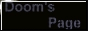
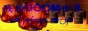
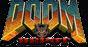
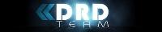
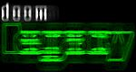
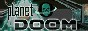
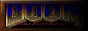
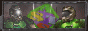

| 交 換 連 結 |
|---|
| 想與本營交換連結的網站，必須是完整的網站或是論壇。謝絕含有 色情，暴力，違法，未完成之網站或留言板。 請 mail 給營長或是至『營區論壇』的『營長信箱』留言，內容註明貴站的:首頁網址 ，Logo網址，所在區域，簡介。一經審核通過後會盡快納入『友站連結』裡。 並將本營 Logo 放置於貴站連結中。 | |
|
200x40 |
88x31 |
|---|---|
友 站 連 結
【Home Page】
| DOOM Like Sites | ||
|---|---|---|
| LOGO | 地區 | 簡 介 |
|  | Taiwan | 寒雨的 FPS classic game 網站，提供相當多的經典 FPS 遊戲檔案與下載 |
|
|
Taiwan | Weow 的 DOOM 之家，有Legacy【連線】與【新手】設定詳細圖文說明，地圖編輯軟體教學，很多 Weow 的原創地圖可下載 |
 |
Taiwan | Weow 與 Howie 兩位大師的 Ultimate Doom Legacy 專業網站，包含很多 Legacy 相關的資訊與技巧教學 |
| TNLKM DOOM's Page | Taiwan | TNLKM 的 DOOM 網站，老字號的 DOOM 網站，雖然已經不存在，但當時所作的貢獻值得大家紀念它 |
| Taiwan | 由顧問官 UAC 與 科技官 Weow 擔任版主的國內大型 DOOM 社群，討論板 | |
| Taiwan | 由 後勤官 寒雨 擔任版主的國內大型 DOOM 社群，討論板 | |
|
|
HK | 香港戰士 Timothy 的個人網站，有很多有關DOOM的資料與圖文說明與相關檔案的下載 |
|
|
Taiwan | 士官長 DoomEnergy 的南方堂果屋，有許多 DOOM 的介紹以及自製的小遊戲 |
|  | HK | 香港戰士 Arthas 的個人網站，有 DOOM 1,2,3 的相關內容和資料提供 Wad 的下載 |
| USA | DoomWadStation 首頁，提供相當多的外掛地圖檔案的下載 | |
|  | USA | Doom Depot 首頁，提供相當多的地圖檔案資源與消息 |
| USA | DOOM 模擬器首頁，連線效果非常好，強烈建議使用 | |
| USA | DOOM 模擬器首頁，連線效果極佳，並新增許多模式，強烈建議使用 | |
| USA | DOOM 模擬器首頁，畫面很炫麗 3D 模組的 DOOM 模擬器 | |
|
|
USA | DOOM 模擬器首頁，絢麗的 3D 引擎，讓畫面更華麗 |
|  | USA | 以 ZDOOM 衍生出來的模擬器，以強大的 OpenGL 3D 引擎，讓畫面更加炫麗 |
|  | USA | DOOM 模擬器首頁，連線效果與畫面品質非常均衡的 DOOM 模擬器，強烈建議使用 |
| USA | WAD編輯軟體 Doom Builder 網站提供地圖編輯軟體的下載與介紹 | |
|  | USA | 國外知名的 Doom 網站，相關的資源非常豐富 |
| USA | 國外最大 Doom 社群 | |
| USA | 設計毀滅戰士的原創公司 id software | |
| Japan | 【PARK of DOOM】提供熱衷 Nightmare Demo 的錄製，與 3D WAD 的製作 | |
| SHOgun 的 WAD 倉庫 | Japan | 【DOOMER將群「SHOgun」之WAD倉庫】提供很多的 DOOM 相關的資訊 與 WAD 下載 |
|  | Korea | 【DJ】 Doom 交流網站，國外的 Doomer 團體提供錄影檔愛好者交流的園地 |
|
|
Czech | 【66】Doom 交流網站，國外的 Doomer 團體 |
|  | Russia | 【-= ]ASTS[ Team =-】Doom 交流網站，國外的 Doomer 團體 |
| Other Friendly Sites | ||
| LOGO | 地區 | 簡 介 |
|
|
Taiwan | 【蝶之谷】一個相當美麗的網站，提供相當多的網頁技巧教學與資源 |
| USA | 本營所採用 BFG 戰士圖片 原作者 Jonathan Bauer 的網站【HIGH 5 ART】，有很多他的美術作品! | |